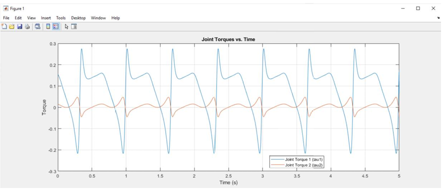
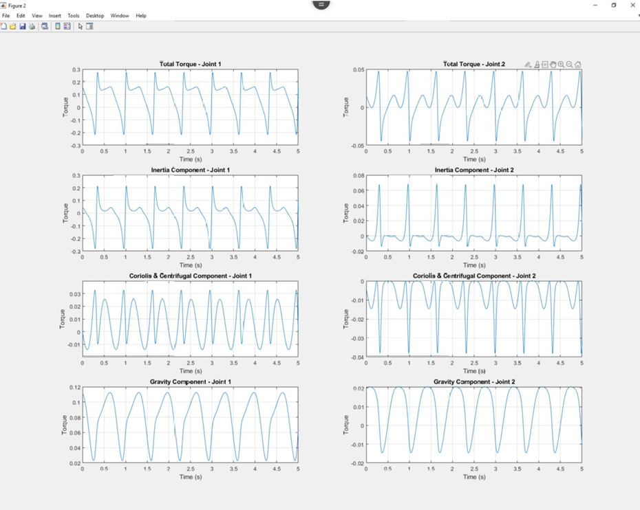
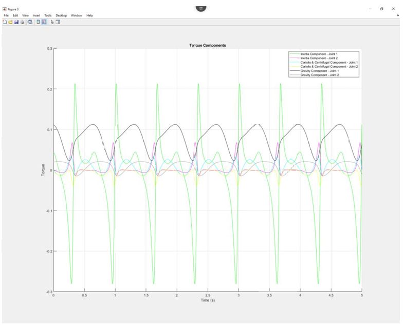

Robot Arm Dynamics & Torque Analysis
This project covers reverse dynamic analysis and torque decomposition for a planar 2R robot manipulator, implemented in MATLAB with Simscape Multibody simulation for validation.
The first part of this project required performing reverse dynamic analysis using the 2R robot's dynamic equations of motion. The first step was to perform inverse kinematics to determine joint angles for a given circular end-point trajectory over a 0–5 second period. A numerical approach was used, and after calculating the joint angles, they were differentiated across time to obtain joint velocities and joint accelerations. These values were then used in the dynamic equation of motion to calculate the joint torques. After plotting these joint torques versus time, the following results were obtained.

Though the analytical approach might have been slightly more accurate, the numerical approach matched the expected output very well.
In the next part of this project, the breakdown of torque components into their three contributing components was plotted — inertia, Coriolis & centrifugal, and gravity. Using the given dynamic equations of motion and plotting the total torque with each individual component, the following results were obtained.

Plotting all components on the same graph revealed which was most dominant in the overall joint effort. The dominant components were analyzed by varying the trajectory frequency. At low frequencies, gravity dominates as the primary torque contributor. As frequency increases, the inertia component grows significantly due to greater accelerations, eventually becoming the dominant term, while Coriolis & centrifugal components rise as well. Gravity, being constant, becomes proportionally less significant at higher speeds.

- Inverse kinematics & reverse dynamic analysis
- Dynamic equations of motion
- Joint torque calculation & decomposition
- Inertia, Coriolis & centrifugal, and gravity torque components
- Frequency analysis of dominant torque contributions
- Numerical differentiation for joint velocities & accelerations
- MATLAB & Simulink/Simscape integration
Current Location
North of Atlanta, GAUnited States of America